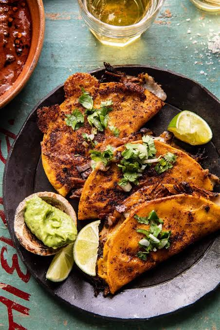

Fried tacos recipe
These are my favorite tacos to make mainly do to the seasoning blend
I made for them. They taste best on a blackstone but you can make them in any cast iron skillet
or just any skillet for that matter. They pair best with some homemade guac or salsa.

Ingredients
- 1 tsp onion powder
- 1 tsp garlic powder
- 1 tsp smoked paprika
- 1 tsp cumin
- 1/2 tsp coriander
- 1 tsp black peper
- 1 tsp chili powder
- 1 tsp cornstarch
- 3 tsp tomato/chicken bullion
- 12-15 white corn tortilas abou small to medium size
- 2lbs ground beef
- High smoke point oil
- 2lbs bag shredded mozzerella cheese
How to Cook
- make your seasoning mix using the corn starch and
all the listed seasonings above EXCEPT the Tomato chicken bullion
- Get your cooking surface nice and hot and use a generous amount
of oil to cook the beef in. If using a blackstone only cook on one side. The excess will be used later
- cook the beef until it his about 90% done then add seasoning mix to
it. The cornstarch in mix will thicken the excess oil and help everything bond to the beef.
- once fully cooked add the bouillon and mix well. Wait about 2 minutes more then shut off the heat.
- Grab another pan to cook the tacos on or use the clean side of the blackstone.
- Lay each tortila flat and spread a handful of shredded mozzerella. Let
sit for about 2 minutes and add your beef and close into a taco. Flip about every 2-3 minutes until
both sides are nice and crisp.
- Plate it up with some guac and salsa and enjoy!
Storage and left overs
These are best reheated in a air fryer or oven even but I have
used a microwave and they taste just fine. They last about two days in the fridge but are best if
eaten by the next day.
Side Notes
Onions diced are a good add to the beef. Play with the seasoning mixture to your liking
and see what works best for you. I will say the bouillon I use is Knorr brand. It Has
plenty of salt In my opinion so I didn't even list it as an Ingredient.
Like I said I prefer to cook these on a blackstone